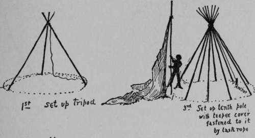
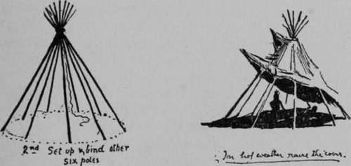
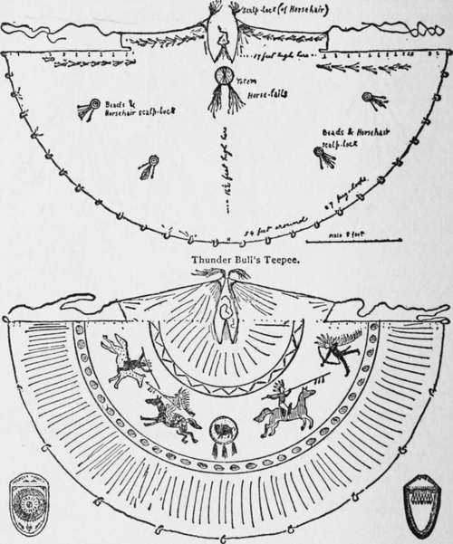
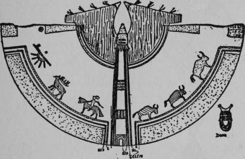

Putting Up The Teepee
Description
This section is from the book "The Book Of Woodcraft", by Ernest Thompson Seton. Also available from Amazon: The Book of Woodcraft.
Putting Up The Teepee
Twelve poles also are needed. They should be as straight and smooth as possible; crooked, rough poles are signs of a bad housekeeper - a squaw is known by her teepee poles. They should be 13 or 14 feet long and about 1 inch thick at the top. Two are for the smoke-vent; they may be more slender than the others. Last of all, make a dozen stout short pegs about 15 inches long and about 1 1/2 inches thick. Now all the necessary parts of the teepee are made.
This is how the Indian tent is put up: Tie three* poles together at a point about 1 foot higher than the canvas, spread them out in a tripod the right distance apart; then lay the other poles (except three including the two slender ones) in the angles, their lower ends forming a small circle. Bind them all with a rope, letting its end hang down inside for an anchor. Now fasten the two ropes at A cut I to the stout pole left over at a point 10 feet up. Raise this into its place, and the teepee cover with it, opposite where the door is to be. Carry the two wings of the tent around till they overlap and fasten together with the lacing-pins. Put the end of a for weather. In the centre dig a hole 18 inches wide and 6 inches deep for the fire.
*Some use four and find it stronger.
The fire is the great advantage of the teepee, experience will show how to manage the smoke. Keep the smoke-vent swung down wind, or at least quartering down. Sometimes you must leave the door a vent-pole in each of the vent flap pockets, outside of the teepee. Peg down the edges of the canvas at each loop. Stretch the cover by spreading the poles. Hang the door on a convenient lacing-pin. Drive a stout stake inside the teepee, tie the anchor rope to this and the teepee is ready little open or raise the bottom of the teepee cover a little on the windward side. If this makes too much draught on your back, stretch a piece of canvas between two or three of the poles inside the teepee, in front of the opening made and reaching to the ground. The draught will go up behind this.
Decorations of a Teepee and Two Examples of Doors.
By these tricks you can make the vent draw the smoke. But after all the main thing is to use only the best and driest of wood. This makes a clear fire. There will always be more or less smoke 7 or 8 feet up, but it worries no one there and keeps the mosquitoes away.
Red
All parts marked so: Smoke-flaps and all tops of teepees, stem of pipe, lower half-circle under pipe, middle part of bowl, wound on side of Elk, blood falling and on trail; Horse, middle Buffalo, two inner bars of pathway upback; also short, dark, cross-bars, spot on middle of two door-hangers, and fringe of totem at top of pathway, and two black lines on doorway.
Yellow
All parts marked so: Upper half-circle under pipe stem, upper half of each feather on pipe; horseman with bridle, saddle and one hindfoot of Horse; the largest Buffalo, the outside upright of the pathway; the ground colors of the totem; the spotted cross-bars of pathway; the four patches next the ground, the two patches over door, and the rings of door-hanger.
Green
All parts marked so. Bowl of pipe, spot over it; feather tips of same; Elk, first Buffalo, middle line on each side pathway, and around teepee top; two dashed cross-bars on totem and dashed cross-bars on pathway; bar on which Horse walks; lower edge and line of spots on upper part of door.
Continue to:
Tags
bookdome.com, books, online, free, old, antique, new, read, browse, download